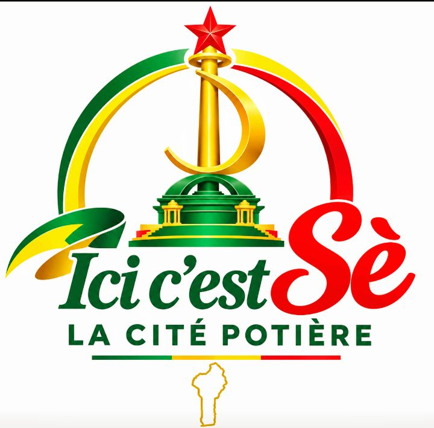

Poterie
Poterie
Mama Adjovi
📍 Sè Centre
Maître potière depuis plus de 30 ans. Spécialiste des jarres traditionnelles et canaris cérémoniels en argile naturelle.

« Terre d'héritage, fière de sa tradition, tournée vers le développement. »
La vitrine numérique de Sè — La Cité Potière. Découvrez notre patrimoine, nos artisans, notre culture, nos produits locaux et nos événements. Un voyage au cœur de la richesse béninoise.
Un patrimoine millénaire, une communauté vivante, un savoir-faire transmis de génération en génération au cœur du département du Mono.
Sè, située dans la commune de Houéyogbé, au cœur du département du Mono, est une terre d'histoire, de culture et de tradition. Connue comme la Cité Potière, elle perpétue depuis des siècles un savoir-faire artisanal unique autour de l'argile et de la poterie.
Les femmes de Sè, gardiennes de ce patrimoine, façonnent à la main des jarres, canaris, marmites et objets décoratifs qui racontent l'histoire et l'identité de tout un peuple. Chaque pièce est unique, porteuse de sens et de mémoire.
Mais Sè, c'est aussi une communauté vivante : des artisans, des agriculteurs, des commerçants, des artistes, des jeunes pleins d'ambition et une diaspora attachée à ses racines. C'est cette richesse humaine et culturelle que la marque ICI C'EST SÈ met en lumière.

Une combinaison unique pour construire un modèle économique diversifié, résilient et durable au service de tout un territoire.
Produire et diffuser des histoires, images, portraits, reportages et actualités qui construisent l'identité de la destination Sè.
Mettre en relation artisans, entrepreneurs, producteurs et clients autour des produits et services de Sè.
Promouvoir les villages, sites, traditions, expériences et événements afin de stimuler le tourisme local et régional.
Notre vision pour faire de Sè une marque territoriale de référence au Bénin et en Afrique de l'Ouest.
Une progression structurée, du juridique à l'événementiel, pour bâtir une marque solide et durable au service de tout un territoire.
Création de l'entreprise via APIEx / MonEntreprise.bj. Recherche d'antériorité et préparation du dossier de marque auprès de l'OAPI.
Finalisation du logo, charte graphique, site internet, réseaux sociaux professionnels et catalogue de prestations.
Recensement des artisans, portraits, reportages immersifs dans les villages et sites emblématiques de Sè.
Lancement commercial, ouverture de la boutique physique et numérique, publicité et premiers partenariats stratégiques.
Organisation du premier grand événement annuel, mobilisation des sponsors, développement touristique et extension à la Commune de Houéyogbé.
Une diversification stratégique pour limiter la dépendance à une seule source de revenus et assurer la pérennité de la marque.
Gestion réseaux sociaux, création de contenus, photographie, vidéographie, reportages, interviews, publicité et community management.
Promotion des villages et sites, circuits touristiques, contenus de découverte, guides et promotion événementielle.
Promotion des potiers, commercialisation des produits artisanaux, vitrine numérique, poteries et collections ICI C'EST SÈ.
Polos, T-shirts, casquettes, sacs, bracelets, porte-clés, mugs, tableaux, objets décoratifs, souvenirs et accessoires.
Festivals, journées culturelles, expositions, foires artisanales, rencontres communautaires, activités sportives, concerts et spectacles.
Communication digitale, community management, entrepreneuriat, artisanat, marketing, photographie et valorisation des produits locaux.
Découvrez les femmes et les hommes qui font vivre le savoir-faire de la Cité Potière. Contactez-les directement par WhatsApp.
Poterie
Maître potière depuis plus de 30 ans. Spécialiste des jarres traditionnelles et canaris cérémoniels en argile naturelle.
 Poterie
Poterie
Artisan sculpteur-potier, créateur de pièces décoratives modernes mêlant tradition et design contemporain.
Tissage
Tisseuse de pagne traditionnel et créatrice de motifs inspirés du patrimoine culturel de la région du Mono.
 Sculpture
Sculpture
Sculpteur sur bois et argile. Réalise masques, statuettes et objets d'art inspirés des traditions vodoun.
Bijoux
Créatrice de bijoux artisanaux en perles de terre cuite, laiton et bronze. Collections uniques et personnalisables.
Cuisine locale
Spécialiste de la cuisine béninoise traditionnelle. Transforme et commercialise les produits du terroir de Sè.
Poterie
Atelier familial transmis depuis 4 générations. Spécialiste des grandes jarres de conservation et objets rituels.
Tissage
Coopérative de 12 femmes spécialisées dans le tissage traditionnel, la teinture naturelle et la création textile.
Sculpture
Sculptrice sur argile et bois. Créatrice de pièces d'art contemporaines inspirées du patrimoine béninois.
De la terre brute à l'objet fini, découvrez les 4 étapes d'un savoir-faire millénaire transmis avec passion de mère en fille.
L'argile est extraite dans des carrières locales, puis nettoyée et préparée pour être modelée.
Le façonnage est réalisé par les mains expertes des potières, sans tour, selon la technique ancestrale.
Chaque pièce est décorée avec des motifs traditionnels puis laissée à sécher naturellement au soleil.
La cuisson se fait à ciel ouvert, donnant aux poteries leur couleur rouge typique et leur solidité.
Poteries, produits agricoles transformés, artisanat et créations locales — découvrez tout ce que Sè a à offrir.
Jarres, canaris, marmites et objets décoratifs en argile naturelle.
Tissus traditionnels teints et tissés selon des techniques ancestrales.
Masques, statuettes et objets d'art taillés à la main dans le bois.
Perles, colliers, bracelets et parures uniques en terre cuite et laiton.
Maïs, manioc, arachide, huile de palme et produits transformés.
Spécialités culinaires béninoises préparées par nos artisans.
Objets souvenirs et cadeaux portant l'identité de la Cité Potière.
T-shirts, polos, casquettes et accessoires de la marque ICI C'EST SÈ.
Un patrimoine naturel, culturel et historique à explorer. Préparez votre visite de la Cité Potière et laissez-vous surprendre.
Assistez à la fabrication des poteries en direct et découvrez les techniques ancestrales transmises depuis des générations.
Visiter
Lieu de mémoire et d'histoire, témoin du passé riche et de l'identité culturelle profonde de Sè et de la région du Mono.
Découvrir
Couleurs, saveurs et vie locale au cœur du marché de Sè, entre produits frais, artisanat et rencontres chaleureuses.
ExplorerFestivals, foires artisanales, journées culturelles et rencontres communautaires — ne manquez rien de la vie de Sè.
Célébration annuelle du savoir-faire potier avec expositions, démonstrations et vente de créations artisanales.
Rencontre régionale des artisans du département du Mono. Expositions, démonstrations et networking professionnel.
Hommage aux traditions, danses, musiques et contes du patrimoine culturel de la Cité Potière.
Atelier pratique pour découvrir les techniques de base de la poterie traditionnelle, animé par les maîtres potiers de Sè.
Grand festival annuel réunissant artistes, artisans et communautés du Mono autour du patrimoine culturel béninois.
Marché festif de fin d'année dédié aux produits artisanaux et créations locales. Idéal pour les cadeaux de Noël.
Suivez la vie de la Cité Potière : portraits, reportages, initiatives et nouveautés de la marque ICI C'EST SÈ.
La marque ICI C'EST SÈ franchit une étape décisive avec le lancement de sa plateforme numérique dédiée à la promotion de Sè, de ses artisans, de sa culture et de son tourisme. Une vitrine pensée pour le Bénin et l'Afrique de l'Ouest.
Rencontre avec l'une des figures emblématiques de la poterie de Sè et transmission d'un héritage familial.
Patrimoine, art, gastronomie : découvrez pourquoi Sè mérite le détour lors de votre prochain voyage au Bénin.
Grâce à un nouveau partenariat, la coopérative de 12 femmes augmente sa capacité de production et exporte désormais au-delà du Bénin.
La marque ICI C'EST SÈ lance un programme d'initiation gratuit pour les jeunes de la commune de Houéyogbé.
Plongez dans l'univers visuel de Sè : artisanat, paysages, événements et vie communautaire.
Faire de l'identité de Sè une valeur économique et culturelle durable.
Une stratégie multi-canal pour assurer la pérennité et la résilience de la marque ICI C'EST SÈ.
Entreprises et organisations paient pour promouvoir leurs produits sur les plateformes ICI C'EST SÈ.
Affiches, vidéos, gestion de pages, couverture d'événements et campagnes digitales ciblées.
T-shirts, polos, casquettes, sacs, souvenirs et objets personnalisés sous la marque.
Commission sur la vente de produits artisanaux proposés via la plateforme numérique.
Organisation d'événements et prestations de communication événementielle.
Organisation et commercialisation de circuits et expériences à Sè et dans le Mono.
Collaborations commerciales avec entreprises, institutions, ONG, hôtels et collectivités.
Formations professionnelles en communication digitale, artisanat et entrepreneuriat.
Un projet fédérateur qui mobilise tous les acteurs du territoire pour un développement durable et inclusif.
Artisan, partenaire, investisseur ou institution — contactez-nous pour construire ensemble la vitrine numérique de Sè.
Suivez la construction de la marque ICI C'EST SÈ et ne manquez aucun reportage, portrait ou événement de la Cité Potière.
Ouvert aux partenariats commerciaux, sponsors, institutions culturelles et projets de valorisation territoriale. N'hésitez pas à nous contacter.